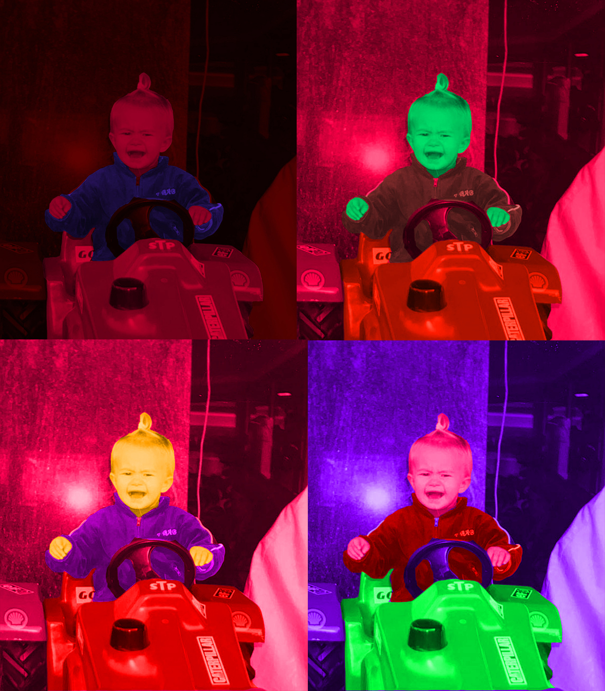
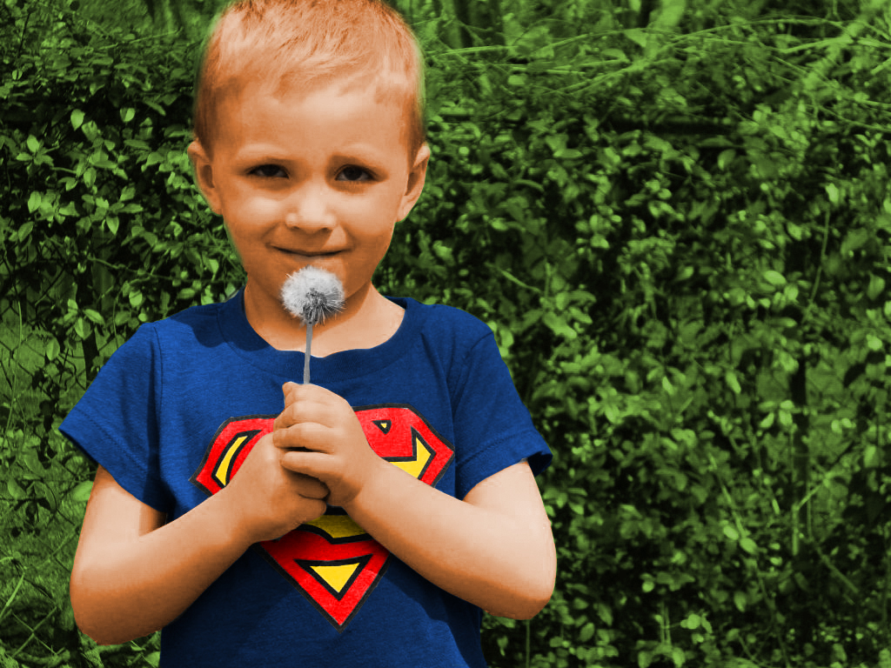

Na ovoj ću stranici pokazati nekoliko svojih radova.
Vježba 1
Koristila sam kolorizaciju na crno bijeloj fotografiji te mi se sviđa konačni rezultat.
Vježba 2
Poanta zadatka je bila kolorizirati crno bijelu fotografiju.
Vježba 3

U ovom smo zadatku trebali dodavati objekte s drugih fotografija.